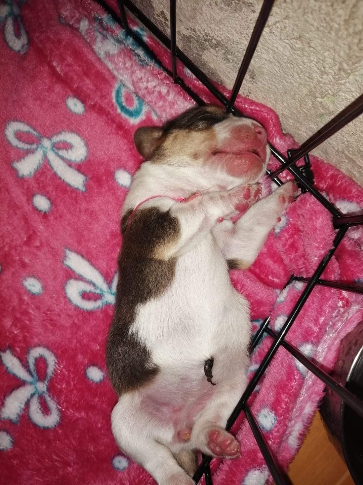
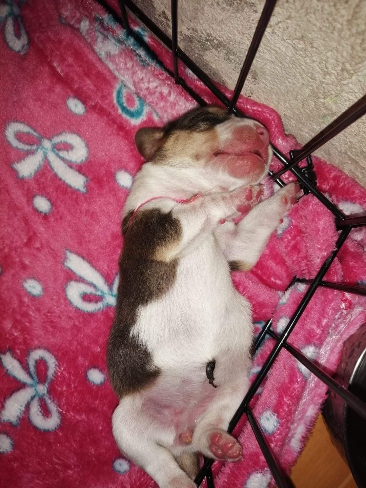
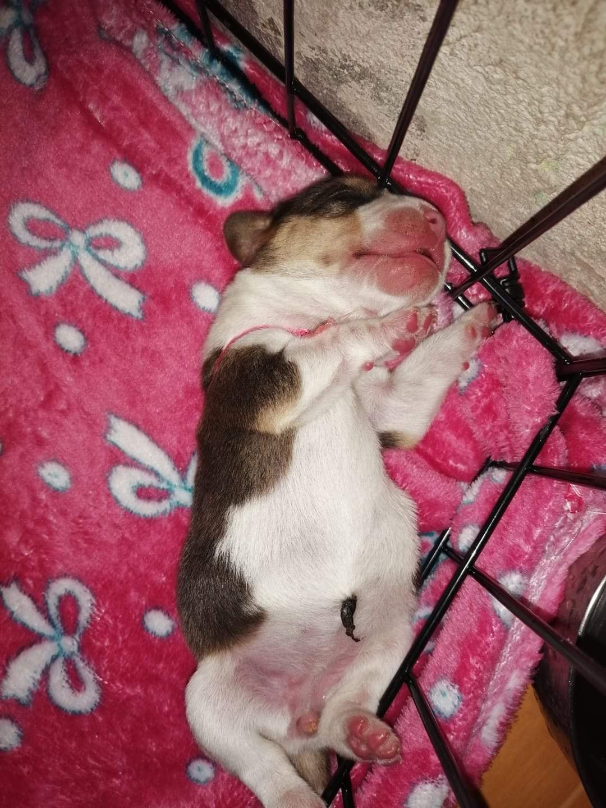

Baby Beaglyy
 



Beaglyy is a beagle breed dog that simply give stress to her owners all the time. Beaglyy loves to eat her poop whenever she finishes and even scatter it around the floor. Her furparent loves to walk her around the streets even the consiquences are a bunch of ticks.
Beagle - small hound dog breed popular as both a pet and a hunter. It is looks like a small foxhound that a has large brown eyes, hanging ears, and a short coat, usually combination of black, tan, and white. The Beagle is a solid built dog, heavy for its height. It generally use as a rabbit hunter and is typically an alert, affectionate dog. There are two sizes of breed: Beagles standing 13 inches (33 cm) or less at the withers and weighing under 20 pounds (9 kg) and those standing more than 13 inches but not exceeding 15 inches (38 cm) at the withers and weighing 20 to 30 pounds (9 to 14 kg).
Care and upkeep - Beagles are relatively low-maintenance as if you will beleive. Hehehe, However, they need a yard that fenced and either a long leash walk daily. Some Beagles can be an escape artists and will climb out of dog runs or over fences if determined. The beagle is not a good candidate for hiking, as it tends to follow a scent and does not come back when called. A Beagle can do well at dog parks as long as it is not around large aggressive dogs. Coat care requires a weekly or twice-weekly brushing or combing to remove dead hair, more in shedding season.
Temperament - Bred with a disposition for hunting alongside other dogs, the Beagle is known for its amiable nature and rarely engages in conflicts with other animals. This breed easily forms friendships with both canines and humans, displaying an outgoing, playful, cheerful, and adventurous personality, making it an enjoyable companion for people of all ages. However, due to its independent streak and tendency to get easily distracted, Beagles can be challenging to train. Despite being quite active outdoors, they can adapt to a calm indoor environment, yet they have the potential to become destructive if left alone for extended periods. Beagles are known to bark, especially if they are untrained or feeling lonely. While they can serve as decent watchdogs, they are not ideal protection dogs. It's important to note that these characteristics represent traditional and widely accepted generalizations about the breed, and individual Beagles may exhibit different behaviors.



Copyrights intended
This website is for personal use only and you may contact the creator Shider Torre for more information